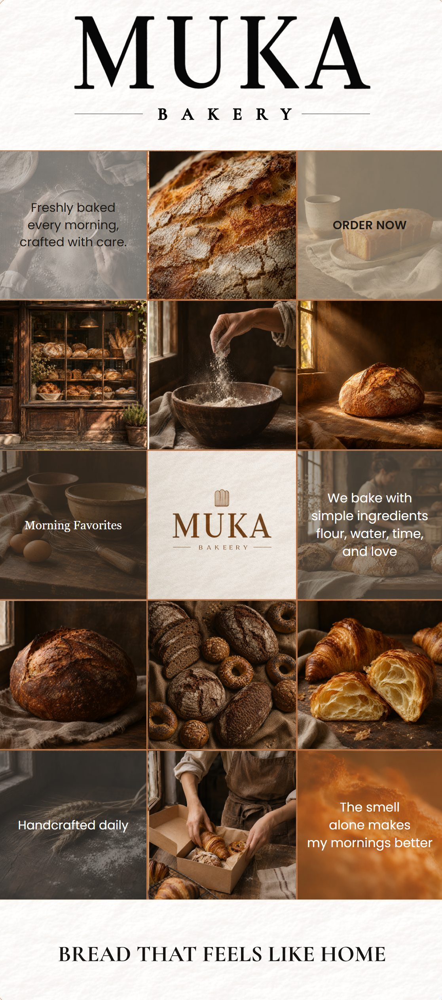
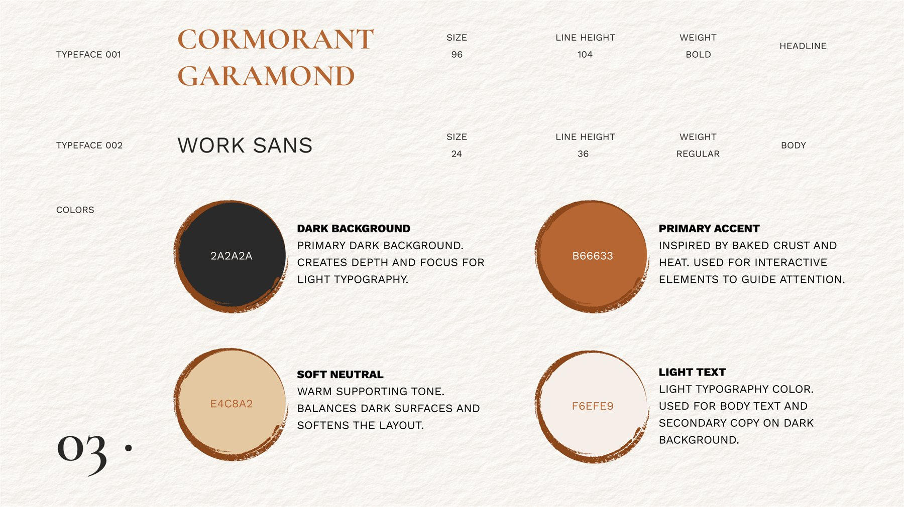

UX/UI-кейс · Концептуальна робота
UX/UI-кейс · Концептуальна робота
Muka
Сайт у редакційному стилі для місцевої ремісничої пекарні
Muka – концепт сайту для місцевої пекарні, яка пече щодня й доставляє того ж дня. Я визначила його візуальний і UI-напрям: лендинг із дев’яти секцій, що показує хліб і випічку ручної роботи через матеріал, текстуру та сліди праці.
 Тип проєктуКонцептуальний проєкт
Тип проєктуКонцептуальний проєкт ПлатформаАдаптивний сайт
ПлатформаАдаптивний сайт РольUX/UI-дизайнерка
РольUX/UI-дизайнерка ОбсягВізуальна концепція та UI
ОбсягВізуальна концепція та UI


 Проєкт у цифрах
Проєкт у цифрах
- 5принципів дизайну
- 15плиток на мудборді
- 2шрифти
- 4основні кольори
- 9секцій лендингу
- 3категорії продуктів
 01 · Про проєкт
01 · Про проєкт
Хліб ручної роботи, спокійний онлайн-досвід
Місцева реміснича пекарня, яка пече щодня й доставляє того ж дня. Проєкт представляє її хліб і випічку ручної роботи через зрозумілий і спокійний онлайн-досвід.
Підхід
- На що спирається дизайн
- Матеріал, текстура й сліди праці замість візуального сторітелінгу.
- Інтерфейс
- Він лишається стриманим і дає простір продукту, щоб довіра виникала природно ще до будь-якого заклику до дії.
- Ключові слова
- Редакційний підхід
- Дизайн, що йде від матеріалу
- Реміснича пекарня
- Локальний продукт
- Цифровий досвід

 02 · Задум дизайну
02 · Задум дизайну
П’ять принципів за кожним рішенням
Кожен принцип задає правило, якого дотримується лендинг: для структури, декору, шрифту, кольору й довіри, яку він створює.
- 01
Редакційна структура
Інтерфейс побудовано як редакційну верстку, з чіткою ієрархією, паузами й рівним ритмом читання.
- 02
Візуальна стриманість
Дизайн свідомо уникає декоративних елементів і тримає увагу на продукті та змісті.
- 03
Типографіка як структура
Шрифт організовує зміст, спрямовує увагу й задає тон усієї сторінки.
- 04
Колір як атмосфера
Колір створює настрій і глибину. Він не має перетягувати увагу чи домінувати в інтерфейсі.
- 05
Досвід, що будує довіру
Сторінка допомагає відвідувачам почуватися впевнено, перш ніж вони ухвалять будь-яке рішення.
 03 · Мудборд
03 · Мудборд
Мудборд і референси
Борд задає тон бренду: логотип Muka, крупні плани скоринки й борошна, руки за роботою, вітрина пекарні та хліб у теплому світлі.
- На борді
- П’ятнадцять плиток у сітці 3 × 5 під логотипом: вісім фото, шість рядків тексту й ще раз логотип у центрі.
- Фрази на борді
- “Freshly baked every morning, crafted with care.”
- “We bake with simple ingredients: flour, water, time, and love.”
- “Morning favorites”
- “Handcrafted daily”
- “The smell alone makes my mornings better”
- “Order now”
- Фінальна фраза
- Bread that feels like home

 04 · Типографіка й колір
04 · Типографіка й колір
Два шрифти, чотири кольори
Типографіка будує структуру, а колір задає атмосферу. Кожен колір має свою роль; акцент позначає інтерактивні елементи.
- Cormorant GaramondЗаголовки · Bold · 96 / 104
- Work SansОсновний текст · Regular · 24 / 36
- 4основні кольори, кожен зі своєю роллю
- Основний акцент · #B66633Натхненний запеченою скоринкою й жаром. Для інтерактивних елементів, щоб спрямовувати увагу.
- Темне тло#2A2A2A · глибина й фокус для світлого тексту
- М’який нейтральний#E4C8A2 · теплий тон, що врівноважує темні поверхні
- Світлий текст#F6EFE9 · основний і допоміжний текст на темному тлі
- 2шрифти: із засічками для заголовків, без засічок для читання
Шрифт і колір зблизька
Перетягуйте фрейми

 05 · Дизайн лендингу
05 · Дизайн лендингу
Одна сторінка, дев’ять секцій
Сторінка веде від обіцянки й того, як печуть хліб, через асортимент і замовлення до відгуків, історії пекарні та підписки на щоденне меню.
-
01
Хедер
Логотип, посилання на Bread, Pastries, Pies, How we bake і Story та контурна кнопка Order now.
-
02
Хіро
«Baked by hand» зі словом «hand» в акцентному кольорі, рядок «Simple ingredients. Real taste» і перша кнопка Order now. Хліб стоїть на акцентному блоці з білим мазком пензля.
-
03
How we bake
Короткий текст про повільне, чесне випікання, далі два блоки з фото: Natural ingredients і Baked by hand.
-
04
Our assortment
Три категорії, кожна з фото, іконкою й одним рядком: Bread, Sweet pastries і Pies.
-
05
Замовлення
«Order fresh, taste warm» на коричневій картці з пирогом, рядок «Fresh bread is one click away» і друга кнопка Order now, одразу після продуктів.
-
06
Loved by many
Середня оцінка, кнопка, щоб прочитати всі відгуки в Google Maps, і картки відгуків з фото, ім’ям, містом і зірками, що гортаються вбік.
-
07
Our story
Три кроки з фото пекарів: The beginning, Our philosophy і Today.
-
08
Fresh to your door
Поле email, щоб зробити замовлення або отримувати щоденне меню.
-
09
Футер
Логотип зі знаком колоска, меню, місто, номер телефону й адреса email.
 06 · Результат
06 · Результат
Ясність, тепло й чесні рішення
Концепт пекарні, створений з увагою до структури, ритму й атмосфери.
Мудборд задає настрій, п’ять принципів – правила; шрифт і колір втілюють обидва на лендингу з дев’яти секцій.
Хліб, що відчувається як дім
- 01
Мудборд і референси
- 02
П’ять принципів дизайну
- 03
Система шрифтів і кольорів
- 04
Лендинг із дев’яти секцій


 Живу в Гахенбурзі, Німеччина
Живу в Гахенбурзі, Німеччина
Проєктуймо для реальних потреб
Шукаю роботу UX/UI-дизайнерки в Німеччині. Напишіть мені на email, зателефонуйте або напишіть у LinkedIn чи Telegram.